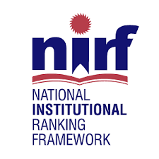

 NIRF India Rankings 2021: 101-150 Rank-band in University, 146 Rank in Engineering, 61 in Pharmacy and 151-200 Rank-band in Overall category. NIRF India Rankings 2020: 180 in Engineering, 76-100 Rank-band in Pharmacy, 151-200 Rank-band in Overall. NIRF India Rankings 2019: All India 160 Rank in Engineering, and 76-100 Rank-band in PharmacyRanked 124 in Engineering Colleges in India, 92 in Pvt. Engg. Colleges category in India, 55 in South India Engg. Colleges category, 12 in Hyderabad Engg. Colleges category - by THE WEEK-Hansa Research Survey 2019 (Engineering Institute Rankings 2019). Ranked “8th Best Engineering College” in Telangana by The Week 2016.
Ranked 49th Best Engineering College in India - by Times Top Private Engineering Institute Rankings 2019 Ranked 74th Best Engineering College in India - by Times Top 100 Private Engineering Institute Rankings 2018. AAA+ Rating by Careers360 Ranking 2019